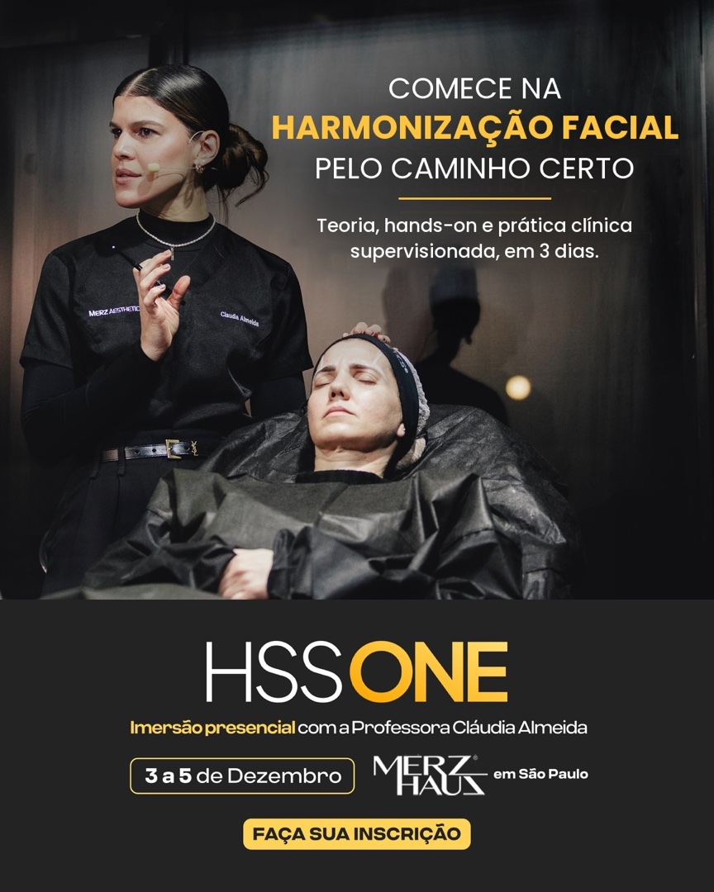
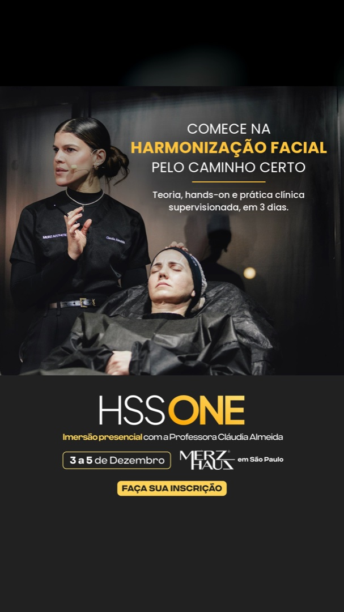

Estático 01B · Caminho certo

feed 4:5

story 9:16
Original: "Quer começar na Harmonização Facial sem pular etapas?"
Variação: "Comece na Harmonização Facial pelo caminho certo", com "Teoria, hands-on e prática clínica supervisionada, em 3 dias." Mesma foto, mesmo rodapé.